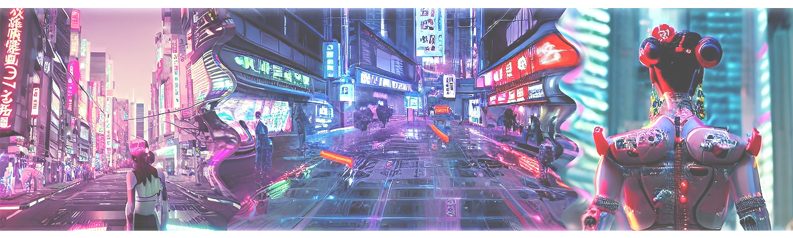

The Cyborg Society
Critical essay exploring cybernetics, gender roles, and future social structures.
What impact does cybernetics have on the society of the future?
Are we on the path to creating an optimized version of ourselves, or are we becoming the
catalysts for a dystopian transformation characterized by a pursuit of perfectionism and
materialism?
I will explore both the influence cybernetics can have on
the individual and its
role in shaping the patterns and structures within our society. To do this, I will draw upon
Donna Haraway's essay "A Cyborg Manifesto," which extensively examines the concept of the
cyborg in relation to gender roles. Additionally, I will use the game "Cyberpunk 2077 and its
portrayal of cyborgs as an example of a possible future scenario.
I authored this essay for
Alan N. Shapiro, a renowned science fiction and media theorist, whose profound work on the
intersection of technology and society served as a primary inspiration for my analysis of
cybernetics in Cyberpunk 2077.
Human Boundaries
How the fusion of biology and hardware distorts our
perception of identity.
Socio-Economic Dystopia
The role of corporations and the erosion of
the
middle class in a highly digitized society.
The Soul vs. The Vessel
Questioning if human identity can survive when
the biological body becomes purely a container for software.
Donna Haraway - Cyborgs
First, I would like to define the concept of a cyborg. The cyborg is the fusion between a living
being (human, animal) and a machine, making it a superior species. The original functions of
the biological organism are optimized and enhanced by the cybernetic components. In the
future, not only people with diseases or disabilities could be granted access to prosthetics and
implants. With the help of this technological progress, humans can evolve into "superhumans,"
a new kind of human.
In Donna Haraway's essay "A Cyborg Manifesto," a cyborg is no longer just a fictional construct
but also "creatures of a social reality." She doesn't view the image of the cyborg as hostile.
Instead, the metaphor combines aspects that were once considered incompatible, turning the image
of a cyborg itself into a tool of irony.
The cyborg challenges conventional gender roles: "The cyborg as an imaginary figure and as lived
experience changes what is to be considered the experience of women at the end of the twentieth
century." Cyborgs are "creatures in a post-gender world." If we consider gender in society as
purely a social construct, the division of gender roles into the categories of man and woman and
the associated stereotypes may lose relevance. Inequality between men and women diminishes as
people, as future transhumanist life forms, revolutionize this existing social construct.
Therefore, the cyborg serves as a metaphor for an oppositional feminist standpoint and
contributes to the utopian idea of a post-gender world.
Through the metaphor of cyborgs, Donna Haraway describes her vision of changes in our society in
the future. The perception of self and one's own identity is distorted by the concept of the
cyborg: the boundary between human and machine becomes increasingly porous. This brings about
materialistic and socialist changes in society.
Cyberpunk 2077
The open-world action role-playing game "Cyberpunk 2077," developed by the Polish studio CD
Projekt Red, was first released on December 10, 2020. The protagonist is "V," a mercenary who
grew up in the city of Night City and is on a mission to steal a prototype implant from a
significant corporation.
Since "Cyberpunk 2077" is set in an open game world, the possibilities are virtually endless,
and players can pursue multiple storylines simultaneously. Therefore, in my essay, I intend to
focus less on the protagonist's storyline and instead concentrate on the portrayal of the
setting, "Night City," in the year 2077. I will place a particular emphasis on the societal
changes within this future scenario, taking into consideration Donna Haraway's perspective from
around 1985 and the present time, 2022.
The City of Dreams
"Night City" is an autonomous, hyper-modern, and highly technologically advanced mega-city
located in the Free State of Northern California. Its slogan, "Night City - The City of Dreams,"
used to epitomize the city's spirit and promise.
The first moments I spent in the game conveyed precisely this image. As a corporate employee, I
could briefly experience being at the top of society and enjoy the benefits of capitalism. The
office complexes were fully digitized, nearly clinically clean, and modern. High-ranking
employees were equipped with expensive, high-quality cybernetics. Visually, the city resembled a
futuristic Tokyo or New York: wide streets, towering skyscrapers, neon signs, and holograms left
a lasting impression as I flew over "Night City" for the first time. It portrayed a future that,
while still seemingly unrealistic, I found intriguing and worth exploring. I imagined myself
exploring all the places seen from the air and wondered about the technological advancements
that would exist in 2077. Much about this scenic city fascinated me.
However, when my flying limousine landed, I also landed, figuratively speaking, on the ground of
reality. The city was, in fact, nothing more than a deceptive facade. I gained a new
perspective, one seen through the eyes of the less privileged residents. Soon, I would lose all
my money, my job, and my reputation, and as the protagonist "V," I came to a more realistic
assessment of the situation.
Despite the seemingly intact economic system, we find ourselves in a dystopian future. The city
is characterized by materialism, corruption, and organized crime. The appearance of a fair,
democratically elected government is deceiving. The true power lies in the hands of the large
corporations and numerous gangs.
With a population of 5 million and its exciting design, the city is depicted as vibrant and full
of life. However, it also conveys a sense of being lost amidst the concrete buildings and
people. Visually, the alleys in the lower parts of the city are in much worse condition than
what is perceived by corporate employees. In contrast to the skyscrapers and expensive
residential areas, the architecture and technology here appear outdated and worn.
There is hardly a middle class in the population. The majority of the people in this mega-city
live in large residential complexes in small apartments. Those whom "Night City" has already
forsaken find no access to a normal life. Many beggars crossed my path, and I repeatedly saw
large encampments set up by the homeless. Almost every bridge and every backyard serves as a
home for the homeless.
Instead of the "City of Dreams," one phrase that is particularly often posed to the protagonist
repeats characteristically throughout the city: "Live a boring life or die in glory." It seems
that in the city, it's not possible to earn enough money, making it nearly impossible to move up
to a higher social class. The middle class as we know it no longer exists. The consequence of
this is a very high crime rate. Due to the high degree of digitalization, gangs and corporations
have new ways to acquire capital. Crime has escalated to the point where players can engage in
vigilante justice, stopping criminals and receiving rewards from the police. Armed gang members,
equipped with modern cybernetics, lurk in almost every neighborhood of the city.
One thing is clear: those who adapt to the situation and become "superhumans" themselves are the
ones who can truly secure their safety and future in this city.
Cybernetics in „Cyberpunk“
In a way, nearly every inhabitant of "Night City" is a cyborg. Due to societal pressure, intense
materialism, and rampant crime, transformation becomes essential. The human, vulnerable
individual becomes worthless. While cosmetic reasons might motivate some transformations in
Cyberpunk 2077, the desire for superiority prevails, driving people to undergo modifications.
The biological, human body evolves into a collective of hardware, and the human brain can be
upgraded with data chips like encoded software. These technical components not only greatly
enhance physical abilities but also mental ones. Augmented Reality is frequently implemented,
with special eye implants allowing people to analyze their surroundings and other individuals.
Additionally, things like transaction information during shopping can be displayed within their
field of vision. Most people have slots above their ears to insert data chips, allowing for
quick communication of job-related information. Building layouts are also stored as software and
can be accessed directly by inserting such a chip.
Doctors, in this case, the "Trauma Team," can remotely read the body data of anyone with the
appropriate implant and are immediately alerted in emergencies, provided the individual has
expensive private health insurance. The options for cybernetic enhancements are virtually
limitless, as are the risks associated with such upgrades to the body. These technical
enhancements for the body are developed by both private and government entities. Therefore,
individuals who augment themselves through cybernetics are dependent on the responsible
institutions. The most successful corporations are those that introduce new technology to the
market. The demand for cybernetics is enormous, despite the high risks of modifying the body.
If too many, subpar, or defective cybernetic parts are integrated, the human organism will
reject them. Powerful medications can counteract this, but they lead to dependency and do not
provide a permanent solution to the problem. Throughout the game, you encounter many heavily
dependent individuals as well as those whose bodies reject the modifications.
What Cyberpunk 2077 defines as "humanity" decreases with each new implantation. The rejection of
"cyberware" can lead to a psychological condition known as "cyberpsychosis," where affected
individuals may exhibit psychopathic, aggressive, and antisocial behavior. They now identify
themselves more as machines and perceive normal humans as inferior. The game does not provide a
definitive perspective on a cure for this condition.
Embracing Change – The Future Society
Self-optimization or pathological perfektionism
Cybernetics has become a commonplace concept in the fictional society of "Night City." The
ethics behind this arms race for the best technological components are not questioned.
"Cyberpunk 2077" provides a solid foundation for weighing the pros and cons of cybernetics.
In general, it obviously offers advantages to augment the body with technical components.
Especially small gadgets that enable Augmented Reality without additional tools seem practical.
If these implants provide the same functions as a smartphone, carrying additional devices would
be redundant; the utility would remain the same. I find the medical monitoring of physical
condition particularly interesting. Realistically, this poses the risk of "total surveillance,"
but in theory, it is still useful. In case of accidents or other emergencies, rescue personnel
can easily locate the injured person and come equipped accordingly. Terminal illnesses could be
detected earlier, potentially saving lives.
To some extent, the idea of enhancing one's own body through technology is no longer far-fetched
today. We already get glimpses of it when we look at the field of plastic and cosmetic surgery.
Social media and influencers have destigmatized such procedures. Especially in parts of Asia and
among younger demographics, encounters with these topics are commonplace. Surgical interventions
have already been normalized in certain areas. The concept of the cyborg, as we know it from
science fiction, is likely no longer in an unreachable future. Research projects like
"Neuralink," an implantable brain-computer interface, or even machine prosthetics, are already
part of our present.
However, one must question to what extent these surgical procedures are ethically justifiable.
Can functioning organic body parts be replaced with cybernetics without hesitation? A cultural
and social shift is necessary. The collective consciousness of entire societies would need to
change its perspective on this ethical issue and weigh the advantages and benefits. In such a
future society, human identity would be much less defined by the body and more by consciousness.
The biological body, along with machine implants, would become a pure vessel for the "soul."
Post-Gender-Society
The question arises whether gender roles can persist as a concept in a future where the soul is
considered separate from the body. Since Donna Haraway's perspective in 1980, particularly in
Western parts of the world, the role of women has shifted even further towards gender equality.
Modern scientific and technological advancements allow for a new perspective on traditional
viewpoints.
Gender is defined by innate physical characteristics, including differences in anatomy,
functions, behavior, and psychological thought patterns. The transition to a "cyborg society"
could lead to a world without a binary gender system. The traditional cultural construct of
gender, as we know it, would fade away.
In contrast to Donna Haraway's assumption that the cyborg could give rise to a "post-gender
society," the dystopian future depicted in "Cyberpunk 2077" presents a different scenario.
Gender roles are less pronounced but not entirely eliminated. Due to the lack of job
opportunities and high gang-related crime, women, in particular, are pushed into prostitution.
As evident from numerous advertisements, the image of women is highly sexualized. Traditional
gender roles only superficially disappear. Jewelry, clothing, and makeup are no longer
gender-specific.
We see both men and women in leadership positions, as is already the case in the present, in
2022. It appears that there won't be significant strides towards gender equality from now until
the fictional year 2077. The example of the fictional corporation "Arasaka" clearly illustrates
that positions of power are still passed from fathers to sons, while daughters are merely
allowed to coexist. This viewpoint mirrors the present. A statement about the future regarding
the "post-gender world" is more hypothetical.
Parts of the world are already undergoing a cultural evolution. Even without the concept of the
cyborg, traditional gender roles are eroding. Germany, for example, allows individuals who do
not identify as either male or female to register as "diverse." Transgender individuals are
already well represented in Western societies. Laws have been enacted to ensure gender equality,
although we still cannot speak of absolute gender equality, especially in the workplace. Men in
Germany still earn, on average, higher salaries than women.
Although we are moving closer to Donna Haraway's utopian vision of feminism and gender equality,
the end of this path has not yet been reached. The duties, rights, and opportunities of
individuals should no longer depend on whether they are born male or female. To achieve this
goal, it is necessary for society to break free from its traditional cultural values and take
further steps towards emancipation.
Conclusion
Cybernetics becomes a form of expression and can simultaneously enrich everyday life. People
would
become significantly more capable. However, this progress poses a threat to our culture and
economy.
As humans become more capable, they are simultaneously expected to achieve more. Systematic
suppression through materialism and capitalism could trigger a destructive performance-driven
society where humanity loses significance.
In this regard, I would like to reference Donna Haraway one last time: 'The self is the one not
mastered, knowing this through the bondage of the others. The other is the one to whom the
future
belongs, knowing this through the experience of domination that exposes the autonomy of the self
as
a lie.' Haraway illustrates with this statement the domination of women and races; however, this
principle can be applied to the question of the impact of new technologies on our society and
each
individual in the future.
For the future of our society and the world, it is extremely important to weigh possible
scenarios
and establish oppositional forces capable of averting a dystopia caused by technological
progress.
I want to share the utopian vision of a society where equality and social justice take center
stage.
References:
Donna Haraway, 1985, A Cyborg Manifesto
CD Project Red, 2020, Cyberpunk 2077
TheNeonArcade(YouTube), 2020, The Complete 2077 History & Lore https://youtu.be/bkXfPBIaZow
OpenVision(YouTube), 2020, Cyberpunk 2077 Timeline Explained! The World of Cyberpunk 2077
Cyberpunk Wiki https://cyberpunk.fandom.com/wiki/Night_City &
https://cyberpunk.fandom.com/wiki/Cyberpsychosis
Rebecca Longtin(YouTube), 2021, Donna Haraway, „A Cyborg Manifesto“ https://youtu.be/XiF9SBrzWoU